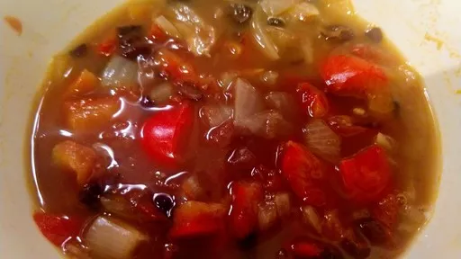

Mexican bean soup with guacamole

This warming, spiced vegetarian soup packs in goodness and is filling too. The quick-to-assemble guacamole topping tastes as good as it looks.
Servings: 2
Total: 30 mins
Ingredients
- 2 tsp rapeseed oil
- 1 large onion, finely chopped
- 1 red pepper, cut into chunks
- 2 cloves garlic, chopped
- 2 tsp mild chilli powder
- 1 tsp ground coriander
- 1 tsp ground cumin
- 400 g can chopped tomatoes
- 400 g can black beans
- 1 tsp vegetable
- 1 small avocado
- handful chopped coriander
- 1 lime, juiced
- ½ red chilli, deseeded and finely chopped (optional)
Instructions
- Heat the
oil2 tsp
in a medium pan, add the onion1 large
(reserving 1 tbsp to make the guacamole later) and pepper1
and fry, stirring frequently, for 10 mins. Stir in the garlic2 cloves
and spices, then tip in the tomatoes400 g can
and beans400 g can
with their liquid, half a can of water and the bouillon powder1 tsp
. Simmer, covered, for 15 mins.
- Meanwhile, peel and de-stone the
avocado1 small
and tip into a bowl, add the remaining onion1 large
, coriander and lime1
juice with a little chilli½
(if using) and mash well. Ladle the soup into two bowls, top with the guacamole and serve.
-
kcal
391
-
fat
15 g
-
saturates
3 g
-
carbs
38 g
-
sugar
18 g
-
fibre
20 g
-
protein
15 g
-
salt
0.46 g
www.bbcgoodfood.com
Short Link
Long Link

 Vegetarian
Vegetarian